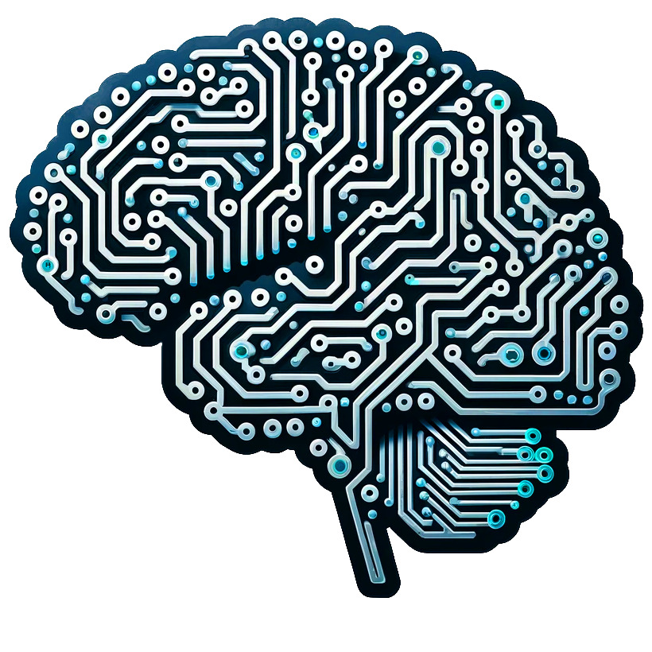

La inteligencia artificial (IA) es un campo de la informática que se centra en crear sistemas y programas capaces de realizar tareas que normalmente requieren inteligencia humana. Esto incluye procesos como el aprendizaje, el razonamiento, la comprensión del lenguaje natural, la percepción visual y la toma de decisiones. La IA utiliza algoritmos y modelos de datos para simular capacidades humanas y resolver problemas en diversas áreas, como la medicina, la automoción, la atención al cliente y muchas más.
